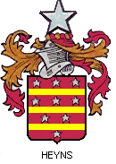

Heijns Family Tree
Heijns WikiTree | Heyns WikiTree | GenForum: Hein, Heine and Heins | Hinze DNA Surname Project
Hain (Hains) means thorn-hedge - As conveyed by the descendents living on the
-
Paternal Line:
Stueve from the family of Gerd Stueve, perhaps from Hoya or from Buecken, Germany.
- Peter Freiershaus (Freuershaus, zum Freyershaus) b. (Hoya or Buecken?) abt 1620 (Ancestry.com)
- Peter Freuershaus called Heyn (Heine, Heins, Hain, Heynen) (b. abt 1652/53 or 1646 or 1656) - Married into Hain Farm
- Anna Margaretha Heynen (b. about 1683)
Johann Hinrich Hain (Heine) - Eldest son, family remained at Heine farm
Margaretha Elisabeth Hajne (b. 1693)
Anna Cathrina Heins (b. abt 1696/98)
Freuershaus (b. Feb 1700, d Feb 27, 1700)
Johan Peter Heyn called "Haare" (b. Feb 1701) - Moved to Calle farm of in-laws Borcherdt Toellner and Maria Alheid Harde
- Frederik Heins (b. 28 Oct 1745)
- Willem Wijnant Heijns (b. 19 Mar 1786) - Ter Aar, Netherlands
Our site traces the Heine/Heijns/Heyns tree through eleven generations and three countries starting with Peter Freuershaus/Stueve. From the Heijns Farm below, the lines of four brothers branch to UC Berkeley Chancellor Roger Heyns (1918-1995) and Grand Rapids Grocer Matt Heyns (1891-1951).

Heijns Farm Netherlands
Willem Wijnant (Wijnand) Heijns
b. 19 Mar 1786 - d. Ter Aar 18 Feb. 1854, age 67Neeltje van Eijk
Married in Ter Aar on the 19 June 1816.Ter Aar, Netherlands - More maps
Photos provided by Wilhelmina (Wil/Willy) Elsje Cats Heijns Wii writes: The pictures I made are from the farm in Korteraar (part of Ter Aar). One is from the house, taken in front of it. I was standing on the "dijk" (I don't know how you called it, but that is a higher part of the "polder" to keep away the water.) The other one is the land what belongs to this farm. Nowadays there are three or four farms on the same land. So it used to be very big. My grandfather was born here, prior to when his father sold it. So this may be where Willem Wijnant started the farm. (Wil's husband's last name is Cats.)
Children
1. Frederik (b. 30 Dec 1817 - d. 26 May 1824)2. Lena (b. 11 Dec 1819 - d. 10 Jun 1842)
3. Aaltje (b. 14 Apr 1822 - d. 27 Jan 1824) - twin daughter
4. Alarytje (b. 14 Apr 1822 - d. 2 Oct 1827) - twin daughter
5. Gerrit (b. 21 Nov 1824)
Branch of UC Berkeley Chancellor Roger Heyns
(1918-1995)
6. Matthijs (b. 23 May 1827)
Branch of Grand Rapid grocer Matt Heyns, his son William and son Larry Heyns in Grand Rapids, Michigan. Larry's son Loren and Loren's kids Ethan and Abbey, live in Atlanta, Georgia.
7. Frederik (b. 25 Jul 1830)
Branch of Jennifer Heyns, in Canada.
8. Willem (b. 8 Oct 1832)
Branch of Jan Heijns - Creator of our illustrated family chart (b. 1933, d. 1994)
Supporting documents:
1. Birth certificate Matthijs Heijns. Matthijs, b. Ter Aar, 23 May 1827, son of Willem Heijns, farmer, aged 41 years and of Neeltje van Eijk,
2. Death certificate Willem (Wijnant) Heijns. Willem Heijns, farmer, died Ter Aar 18 Feb. 1854,, aged 67 years, born in Bleiswijk, husband of Neeltje van Eijk, son of Frederik Heijns and of Marijtje van den Bos, both deceased. The death was registered by : Frederik Heijns, aged 23, son of the deceased and Pieter Rodenburg, farmer, aged 41, son in law of the deceased.
3. Birth certificate of Willem Wijnant Willem Wijnant (b. Bleiswijk 19 Mar 1786), son of Frederik Heins and Maria van den Bosch (also spelled Marijtje van den Bos), witness Petronella van Kisteren.
4. Marriage certificate of Willem Wijnant Heins (Heijns) Willem Wijnant, aged 30 years, occ. farmer, son of Frederik Heins and Maria van den Bosch, both deceased, marries Ter Aar 19 Jun 1816 with Neeltje van Eijk, aged 22, living in Ter Aar, daughter of Gerrit van Eijk deceased and Leentje van Ooijen.
Witnesses were : Gerrit van Dam, aged 32, workman, brother in law of the bride, Leendert van Eijk, aged 32, carpenter, brother of the bride, Christiaan van Alphen, aged 33, peat worker, brother in law of the bride.

Other origins of the name HEYNS: HENDRIK which was originaly HAGANRICH, which
means monarch or sovereign or gentleman or lord or master (...RICH)
from the "Lagan" or fenced-in dwelling or home. Thanks to Chris Heyns for tracking down a possible seal (from a
key ring) and information on the origin of the name Heyns.
As surnames resulted HENDRIKS(Z) or HENDRIKSE(N) with the "abbreviation" HEYN, HEYNS from which followed HEYNEMAN (....MAN to be conceived as child of HEIN)
This site started in the summer of 1998 when Loren's grandpa William Heyns began collecting information in the Netherlands with the genealogy research assistance of Paul van Voorthuijsen. Thanks Paul! We've also received research assistance from Sylvia Moehle in Germany. Thanks Sylvia!
As surnames resulted HENDRIKS(Z) or HENDRIKSE(N) with the "abbreviation" HEYN, HEYNS from which followed HEYNEMAN (....MAN to be conceived as child of HEIN)
This site started in the summer of 1998 when Loren's grandpa William Heyns began collecting information in the Netherlands with the genealogy research assistance of Paul van Voorthuijsen. Thanks Paul! We've also received research assistance from Sylvia Moehle in Germany. Thanks Sylvia!
Piet Heyn (1577-1629)
To our knowledge, we're NOT Related
Piet Heyn (Pieter Pieterszn Heijn) was a "privateer" paid by the Dutch West India Company who used 31 heavily armed ships to capture the Spanish silver fleet in 1628 at the bay of Matanzas, ten miles east of Havana, Cuba. Beforehand, he learned Spanish as a galley slave for ten years. - Wikipedia
To our knowledge, we're NOT Related
Piet Heyn (Pieter Pieterszn Heijn) was a "privateer" paid by the Dutch West India Company who used 31 heavily armed ships to capture the Spanish silver fleet in 1628 at the bay of Matanzas, ten miles east of Havana, Cuba. Beforehand, he learned Spanish as a galley slave for ten years. - Wikipedia
- Heyns alias Smets
- Sebastianus Hayns (b. 1726 Obersayn, Germany)
- Heyns Family in South Africa - from Chris Heyns (Chris.Heyns@eskom.co.za)
- Heynlen family
- Heins in Australia - Gerson Levi Heins (1784-184?)
Up Tree